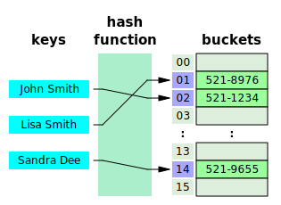
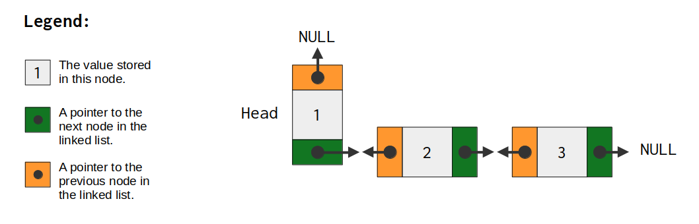
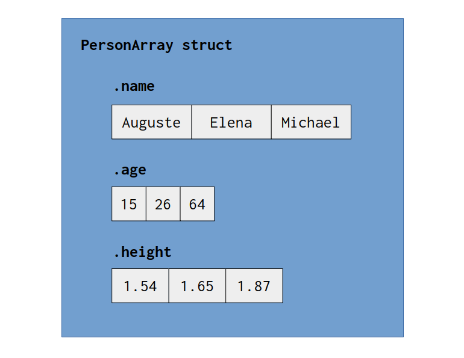

// Check capacity
buffer.capacity;
// Check length
buffer.items.len;11 Data Structures
In this chapter, I want to present the most common Data Structures that are available from the Zig Standard Library, especially ArrayList and also HashMap. These are generic Data Structures that you can use to store and control any type of data that is produced by your application.
11.1 Dynamic Arrays
In high level languages, arrays are usually dynamic. They can easily grow in size when they have to, and you don’t need to worry about it. In contrast, arrays in low level languages are usually static by default. This is the reality of C, C++, Rust and also Zig. Static arrays were presented at Section 1.6, but in this section, we are going to talk about dynamic arrays in Zig.
Dynamic arrays are simply arrays that can grow in size during the runtime of your program. Most low level languages have some implementation of a dynamic array in their standard library. C++ have std::vector, Rust have Vec, and Zig have std.ArrayList.
The std.ArrayList struct provides a contiguous and growable array for you. It works like any other dynamic array, it allocates a contiguous block of memory, and when this block have no space left, ArrayList allocates another contiguous and bigger block of memory, copies the elements to this new location, and erases (or frees) the previous block of memory.
11.1.1 Capacity vs Length
When we talk about dynamic arrays, we usually have two similar concepts that are very essential to how a dynamic array works behind the hood. These concepts are capacity and length. In some contexts, especially in C++, length is also called of size.
Although they look similar, these concepts represent different things in the context of a dynamic array. Capacity is the number of items (or elements) that your dynamic array can currently hold without the need to allocate more memory.
In contrast, the length refers to how many elements in the array are currently being used, or, in other words, how many elements in this array that you have assigned a value to. Every dynamic array works around a block of allocated memory, which represents an array with total capacity for \(n\) elements. However, only a portion of these \(n\) elements are being used most of the time. This portion of \(n\) is the length of the array. So every time you append a new value to the array, you are incrementing its length by one.
This means that a dynamic array usually works with an extra margin, or an extra space that is currently empty, but waiting and ready to be used. This “extra space” is essentially the difference between capacity and length. Capacity represents the total number of elements that the array can hold without the need to re-allocate or re-expand the array, while the length represents how much of this capacity is currently being used to hold/store values.
Figure 11.1 presents this idea visually. Notice that, at first, the capacity of the array is greater than the length of the array. So, the dynamic array have extra space that is currently empty, but it is ready to receive a value to be stored.

We can also see in Figure 11.1 that, when length and capacity are equal, it means that the array have no space left. We have reached the ceiling of our capacity, and because of that, if we want to store more values in this array, we need to expand it. We need to get a bigger space that can hold more values than what we currently have.
A dynamic array works by expanding the underlying array, whenever the length becomes equal to the capacity of the array. It basically allocates a new contiguous block of memory that is bigger than the previous one, then, it copies all values that are currently being stored to this new location (i.e., this new block of memory), then, it frees the previous block of memory. At the end of this process, the new underlying array have a bigger capacity, and, therefore, the length becomes, once again, smaller than the capacity of the array.
This is the cycle of a dynamic array. Notice that, throughout this cycle, the capacity is always either equal to or higher than the length of the array. If you have an ArrayList object (let’s suppose you named it buffer), you can check the current capacity of your array by accessing the capacity attribute of your ArrayList object, while the current length of it is available at the items.len attribute.
11.1.2 Creating an ArrayList object
In order to use ArrayList, you must provide an allocator object to it. Remember, Zig does not have a default memory allocator. And as I described in Section 3.3, all memory allocations must be done by an allocator object that you define, that you have control over. In our example here, I’m going to use a general purpose allocator, but you can use any other allocator of your preference.
When you initialize an ArrayList object, you must provide the data type of the elements of the array. In other words, this defines the type of data that this array (or container) will store. Therefore, if I provide the u8 type to it, then, I will create a dynamic array of u8 values. However, if I provide a struct that I have defined instead, like the struct User from Section 2.3, then, a dynamic array of User values will be created. In the example below, with the expression ArrayList(u8) we are creating a dynamic array of u8 values.
After you provide the data type of the elements of the array, you can initialize an ArrayList object by either using the init() or the initCapacity() methods. The former method receives only the allocator object as input, while the latter method receives both the allocator object and a capacity number as inputs. With the latter method, you not only initialize the struct, but you also set the starting capacity of the allocated array.
Using the initCapacity() method is the preferred way to initialize your dynamic array. Because reallocations, or, in other words, the process of expanding the capacity of the array, is always a high cost operation. You should take any possible opportunity to avoid reallocations in your array. If you know how much space your array needs to occupy at the beginning, you should always use initCapacity() to create your dynamic array.
var gpa = std.heap.GeneralPurposeAllocator(.{}){};
const allocator = gpa.allocator();
var buffer = try std.ArrayList(u8)
.initCapacity(allocator, 100);
defer buffer.deinit();In the example above, the buffer object starts as an array of 100 elements. If this buffer object needs to create more space to accomodate more elements during the runtime of your program, the ArrayList internals will perform the necessary actions for you automatically. Also notice the deinit() method being used to destroy the buffer object at the end of the current scope, by freeing all the memory that was allocated for the dynamic array stored in this buffer object.
11.1.3 Adding new elements to the array
Now that we have created our dynamic array, we can start to use it. You can append (a.k.a “add”) new values to this array by using the append() method. This method works the same way as the append() method from a Python list, or, the emplace_back() method from std::vector of C++. You provide a single value to this method, and the method appends this value to the array.
You can also use the appendSlice() method to append multiple values at once. You provide a slice (slices were described in Section 1.6) to this method, and the method adds all values present in this slice to your dynamic array.
try buffer.append('H');
try buffer.append('e');
try buffer.append('l');
try buffer.append('l');
try buffer.append('o');
try buffer.appendSlice(" World!");11.1.4 Removing elements from the array
You can use the pop() method to “pop” or remove the last element in the array. It’s worth noting that this method do not change the capacity of the array. It just deletes or erases the last value stored in the array.
Also, this method returns as result the value that got deleted. That is, you can use this method to both get the last value in the array, and also, remove it from the array. It’s a “get and remove value” type of method.
const exclamation_mark = buffer.pop();Now, if you want to remove specific elements from specific positions of your array, you can use the orderedRemove() method from your ArrayList object. With this method, you can provide an index as input, then, the method will delete the value that is at this index in the array. You are effectively reducing the length of the array everytime you execute an orderedRemove() operation.
In the example below, we first create an ArrayList object, and we fill it with numbers. Then, we use orderedRemove() to remove the value at index 3 in the array, two consecutive times.
Also, notice that we are assigning the result of orderedRemove() to the underscore character. So we are discarding the result value of this method. The orderedRemove() method returns the value that got deleted, in a similar style to the pop() method.
var gpa = std.heap.GeneralPurposeAllocator(.{}){};
const allocator = gpa.allocator();
var buffer = try std.ArrayList(u8)
.initCapacity(allocator, 100);
defer buffer.deinit();
for (0..10) |i| {
const index: u8 = @intCast(i);
try buffer.append(index);
}
std.debug.print(
"{any}\n", .{buffer.items}
);
_ = buffer.orderedRemove(3);
_ = buffer.orderedRemove(3);
std.debug.print("{any}\n", .{buffer.items});
std.debug.print("{any}\n", .{buffer.items.len});{ 0, 1, 2, 3, 4, 5, 6, 7, 8, 9 }
{ 0, 1, 2, 5, 6, 7, 8, 9 }
8One key characteristic about orderedRemove() is that it preserves the order of the values in the array. So, it deletes the value that you asked it to remove, but it also makes sure that the order of the values that remain in the array stay the same as before.
Now, if you don’t care about the order of the values, for example, maybe you want to treat your dynamic array as a set of values, like the std::unordered_set structure from C++, you can use the swapRemove() method instead. This method works similarly to the orderedRemove() method. You give an index to this method, then, it deletes the value that is at this index in the array. But this method does not preserve the original order of the values that remain in the array. As a result, swapRemove() is, in general, faster than orderedRemove().
11.1.5 Inserting elements at specific indexes
When you need to insert values in the middle of your array, instead of just appending them to the end of the array, you need to use the insert() and insertSlice() methods, instead of the append() and appendSlice() methods.
These two methods work very similarly to insert() and insert_range() from the C++ std::vector class. You provide an index to these methods, and they insert the values that you provide at that index in the array.
var gpa = std.heap.GeneralPurposeAllocator(.{}){};
const allocator = gpa.allocator();
var buffer = try std.ArrayList(u8)
.initCapacity(allocator, 10);
defer buffer.deinit();
try buffer.appendSlice("My Pedro");
try buffer.insert(4, '3');
try buffer.insertSlice(2, " name");
for (buffer.items) |char| {
try stdout.print("{c}", .{char});
}My name P3edro11.1.6 Conclusion
If you feel the lack of some other method, I recommend you to read the official documentation for the ArrayListAligned1 struct, which describes most of the methods available through the ArrayList object.
You will notice that there is a lot of other methods in this page that I did not described here, and I recommend you to explore these methods, and understand how they work.
11.2 Maps or HashTables
Some professionals know this type of data structure by different terms, like “map”, “hashmap” or “associative arrays”. But the most common term used is hashtable. Every programming language normally have some implementation of a hashtable in their standard libraries. Python have dict(), C++ have std::map and std::unordered_map, Rust have HashMap, Javascript have Object() and Map(), etc.
11.2.1 What is a hashtable?
A hashtable is a data structure based on key-value pairs. You provide a key and a value to this structure, then, the hashtable will store the input value at a location that can be identified by the input key that you provided. It does that by using an underlying array and a hash function. These two components are essential to how a hashtable works.
Under the hood, the hashtable contains an array. This array is where the values are stored, and the elements of this array are usually called of buckets. So the values that you provide to the hashtable are stored inside buckets, and you access each bucket by using an index.
When you provide a key to a hashtable, it passes this key to the hash function. This hash function uses some sort of hashing algorithm to transform this key into an index. This index is actually an array index. It’s a position in the underlying array of the hashtable. This is how a key identifies a specific position (or location) inside the hashtable structure.
Therefore, you provide a key to the hashtable, and this key identifies a specific location inside the hashtable, then, the hashtable takes the input value that you provided, and stores this value in the location identified by this input key. You could say that the key maps to the value stored in the hashtable. You find the value, by using the key that identifies the location where the value is stored. The Figure 11.2 presents this process visually.

The operation described in the previous paragraph is normally called an insertion operation. Because you are inserting new values into the hashtable. But there are other types of operations in hashtables such as delete and lookup. Delete is self describing, it’s when you delete (or remove) a value from the hashtable. While lookup corresponds to when you look at a value that is stored in the hashtable, by using the key that identifies the location where this value is stored.
Sometimes, instead of storing the values directly, the underlying array of the hashtable might be an array of pointers, i.e., the buckets of the array stores pointers that points to the value, or also, may be an array of linked lists. These cases are common on hashtables that allows duplicate keys, or, in other words, on hashtables that effectively handle “collisions” that may arise from the hash function.
Duplicate keys, or this “collision” thing that I’m talking about, is when you have two different keys that points to the same location (i.e., to the same index) in the underlying array of the hashtable. This might happen depending on the characteristics of the hash function that is being used in the hashtable. Some implementations of the hashtable will actively deal with collisions, meaning that, they will handle this case in some way. For example, the hashtable might transform all buckets into linked lists. Because with a linked list you can store multiple values into a single bucket.
There are different techniques to handle collisions in hashtables, which I will not describe in this book, because it’s not our main scope here. But you can find a good description of some of the most common techniques at the Wikipedia page of hashtables (Wikipedia 2024).
11.2.2 Hashtables in Zig
The Zig Standard Library provides different implementations of a hashtable. Each implementation have its own cons and pros, which we will discuss later on, and all of them are available through the std.hash_map module.
The HashMap struct is a general-purpose hashtable, which have very fast operations (lookup, insertion, delete), and also, quite high load factors for low memory usage. You can create and provide a context object to the HashMap constructor. This context object allows you to tailor the behaviour of the hashtable itself, because you can provide a hash function implementation to be used by the hashtable through this context object.
But let’s not worry about this context object now, because it’s meant to be used by “experts in the field of hashtables”. Since we are most likely not experts in this field, we are going to take the easy way to create a hashtable. Which is by using the AutoHashMap() function.
This AutoHashMap() function is essentially a “create a hashtable object that uses the default settings” type of function. It automatically chooses a context object, and, therefore, a hash function implementation, for you. This function receives two data types as input, the first input is the data type of the keys that will be used in this hashtable, while the second input is the data type of the data that will be stored inside the hashtable, that is, the data type of the values to be stored.
In the example below, we are providing the data type u32 in the first argument, and u16 in the second argument of this function. This means that we are going to use u32 values as keys in this hashtable, while u16 values are the actual values that are going to be stored into this hashtable. At the end of this process, the hash_table object contains a HashMap object that uses the default settings and context.
const std = @import("std");
const AutoHashMap = std.hash_map.AutoHashMap;
pub fn main() !void {
var gpa = std.heap.GeneralPurposeAllocator(.{}){};
const allocator = gpa.allocator();
var hash_table = AutoHashMap(u32, u16).init(allocator);
defer hash_table.deinit();
try hash_table.put(54321, 89);
try hash_table.put(50050, 55);
try hash_table.put(57709, 41);
std.debug.print(
"N of values stored: {d}\n",
.{hash_table.count()}
);
std.debug.print(
"Value at key 50050: {d}\n",
.{hash_table.get(50050).?}
);
if (hash_table.remove(57709)) {
std.debug.print(
"Value at key 57709 successfully removed!\n",
.{}
);
}
std.debug.print(
"N of values stored: {d}\n",
.{hash_table.count()}
);
}N of values stored: 3
Value at key 50050: 55
Value at key 57709 successfully removed!
N of values stored: 2You can add/put new values into the hashtable by using the put() method. The first argument is the key to be used, and the second argument is the actual value that you want to store inside the hashtable. In the example below, we first add the value 89 using the key 54321, next, we add the value 55 using the key 50050, etc.
Notice that we have used the method count() to see how many values are currently stored in the hashtable. After that, we also use the get() method to access (or look) at the value stored in the position identified by the key 500050. The output of this get() method is an optional value. This is why we use the ? method at the end to get the actual value.
Also notice that we can remove (or delete) values from the hashtable by using the remove() method. You provide the key that identifies the value that you want to delete, then, the method will delete this value and return a true value as output. This true value essentially tells us that the method successfully deleted the value.
But this delete operation might not be always successful. For example, you might provide the wrong key to this method. I mean, maybe you provide (either intentionally or unintentionally) a key that points to an empty bucket, i.e., a bucket that still doesn’t have a value in it. In this case, the remove() method would return a false value.
11.2.3 Iterating through the hashtable
Iterating through the keys and values that are currently being stored in the hashtable is a very common necessity. You can do that in Zig by using an iterator object that can iterate through the elements of your hashtable object.
This iterator object works like any other iterator object that you would find in languages such as C++ and Rust. It’s basically a pointer object that points to some value in the container, and has a next() method that you can use to navigate (or iterate) through the values in the container.
You can create such iterator object by using the iterator() method of the hashtable object. This method returns an iterator object, from which you can use the next() method in conjunction with a while loop to iterate through the elements of your hashtable. The next() method returns an optional Entry value, and therefore, you must unwrap this optional value to get the actual Entry value from which you can access the key and also the value identified by this key.
With this Entry value at hand, you can access the key of this current entry by using the key_ptr attribute and dereferencing the pointer that lives inside of it, while the value identified by this key is accessed through the value_ptr attribute instead, which is also a pointer to be dereferenced. The code example below demonstrates the use of these elements:
const std = @import("std");
const AutoHashMap = std.hash_map.AutoHashMap;
pub fn main() !void {
var gpa = std.heap.GeneralPurposeAllocator(.{}){};
const allocator = gpa.allocator();
var hash_table = AutoHashMap(u32, u16).init(allocator);
defer hash_table.deinit();
try hash_table.put(54321, 89);
try hash_table.put(50050, 55);
try hash_table.put(57709, 41);
var it = hash_table.iterator();
while (it.next()) |kv| {
// Access the current key
std.debug.print("Key: {d} | ", .{kv.key_ptr.*});
// Access the current value
std.debug.print("Value: {d}\n", .{kv.value_ptr.*});
}
}Key: 54321 | Value: 89
Key: 50050 | Value: 55
Key: 57709 | Value: 41If you want to iterate specifically through the values or the keys of your hashtable, you can create a key iterator or a value iterator object. These are also iterator objects, which have the same next() method that you can use to iterate through the hashtable.
Key iterators are created from the keyIterator() method of your hashtable object, while value iterators are created from the valueIterator() method. All you have to do is to unwrap the value from the next() method and deference it directly to access the key or the value that you are iterating over. The code example below demonstrates the use of a key iterator, but you can replicate the same logic to a value iterator.
var kit = hash_table.keyIterator();
while (kit.next()) |key| {
std.debug.print("Key: {d}\n", .{key.*});
}Key: 54321
Key: 50050
Key: 5770911.2.4 The ArrayHashMap hashtable
If you need to iterate through the elements of your hashtable constantly, you might want to use the ArrayHashMap struct for your specific case, instead of going with the usual and general-purpose HashMap struct.
The ArrayHashMap struct creates a hashtable that is faster to iterate over. That is why this specific type of hashtable might be valuable to you. Some other properties of a ArrayHashMap hashtable are:
- the order of insertion is preserved, i.e., the order of the values that you find while iterating through this hashtable is actually the order in which these values were inserted in the hashtable.
- the key-value pairs are stored sequentially, one after another.
You can create an ArrayHashMap object by using, once again, a helper function that chooses automatically for you a hash function implementation. This is the AutoArrayHashMap() function, which works very similarly to the AutoHashMap() function that we presented in Section 11.2.2.
You provide two data types to this function. The data type of the keys that will be used in this hashtable, and the data type of the values that will be stored in this hashtable.
An ArrayHashMap object have essentially the exact same methods from the HashMap struct. So you can insert new values into the hashtable by using the put() method, and you can look (or get) a value from the hashtable by using the get() method. But the remove() method is not available in this specific type of hashtable.
In order to delete values from the hashtable, you would use the same methods that you find in an ArrayList object, i.e., a dynamic array. I presented these methods in Section 11.1.4, which are the swapRemove() and orderedRemove() methods. These methods have the same meaning here, or, the same effect that they have in an ArrayList object.
This means that, with swapRemove() you remove the value from the hashtable, but you do not preserve the order in which the values were inserted into the structure. While orderedRemove() is able to retain the order in which these values were inserted.
But instead of providing an index as input to swapRemove() or orderedRemove(), like I described in Section 11.1.4, these methods here in an ArrayHashMap take a key as input, like the remove() method from a HashMap object. If you want to provide an index as input, instead of a key, you should use the swapRemoveAt() and orderedRemoveAt() methods.
var hash_table = AutoArrayHashMap(u32, u16)
.init(allocator);
defer hash_table.deinit();11.2.5 The StringHashMap hashtable
One thing that you will notice in the other two types of hashtables that I have presented over the last sections, is that neither of them accepts a slice data type in their keys. What this means is that you cannot use a slice value to represent a key in these types of hashtable.
The most obvious consequence of this, is that you cannot use strings as keys in these hashtables. But it’s extremely common to use strings as keys in hashtables.
Take this very simple Javascript code snippet as an example. We are creating a simple hashtable object named people. Then, we add a new entry to this hashtable, which is identified by the string 'Pedro'. This string is the key in this case, while the object containing different personal information such as age, height and city, is the value to be stored in the hashtable.
var people = new Object();
people['Pedro'] = {
'age': 25,
'height': 1.67,
'city': 'Belo Horizonte'
};This pattern of using strings as keys is very common in all sorts of situations. That is why the Zig Standard Library offers a specific type of hashtable for this purpose, which is created through the StringHashMap() function. This function creates a hashtable that uses strings as keys. The only input of this function is the data type of the values that will be stored into this hashtable.
In the example below, I’m creating a hashtable to store the ages of different people. Each key in this hashtable is represented by the name of each person, while the value stored in the hashtable is the age of this person identified by the key.
That is why I provide the u8 data type (which is the data type used by the age values) as input to this StringHashMap() function. As the result, it creates a hashtable that uses string values as keys, and, that stores u8 values in it. Notice that an allocator object is provided at the init() method of the resulting object from the StringHashMap() function.
const std = @import("std");
pub fn main() !void {
var gpa = std.heap.GeneralPurposeAllocator(.{}){};
const allocator = gpa.allocator();
var ages = std.StringHashMap(u8).init(allocator);
defer ages.deinit();
try ages.put("Pedro", 25);
try ages.put("Matheus", 21);
try ages.put("Abgail", 42);
var it = ages.iterator();
while (it.next()) |kv| {
std.debug.print("Key: {s} | ", .{kv.key_ptr.*});
std.debug.print("Age: {d}\n", .{kv.value_ptr.*});
}
}Key: Pedro | Age: 25
Key: Abgail | Age: 42
Key: Matheus | Age: 2111.2.6 The StringArrayHashMap hashtable
The Zig Standard Library also provides a type of hashtable that mix the cons and pros of the StringHashMap and ArrayHashMap together. That is, a hashtable that uses strings as keys, but also have the advantages from ArrayHashMap. In other words, you can have a hashtable that is fast to iterate over, that preserves insertion order, and also, that uses strings as keys.
You can create such type of hashtable by using the StringArrayHashMap() function. This function accepts a data type as input, which is the data type of the values that are going to be stored inside this hashtable, in the same style as the function presented in Section 11.2.5.
You can insert new values into this hashtable by using the same put() method that we have discussed in Section 11.2.5. And you can also get values from the hashtable by using the same get() method. Like its ArrayHashMap brother, to delete values from this specific type of hashtable, we also use the orderedRemove() and swapRemove() methods, with the same effects that I have described in Section 11.2.4.
If we take the code example that was exposed in Section 11.2.5, we can achieve the exact same result with StringArrayHashMap():
var ages = std.StringArrayHashMap(u8).init(allocator);11.3 Linked lists
The Zig Standard Library provides an implementation for both singly and doubly linked lists. More specifically, through the structs SinglyLinkedList and DoublyLinkedList.
In case you are not familiar with these data structures, a linked list is a linear data structure that looks like a chain, or, a rope. The main advantage of this data structure is that you normally have very fast insertion and deletion operations. But, as a disadvantage, iterating through this data structure is usually not so fast as iterating through an array.
The idea behind a linked list is to build a structure that consists of a sequence of nodes connected to each other by pointers. This means that linked lists are usually not contiguous in memory, because each node might be anywhere in memory. They do not need to be close to one another.
In Figure 11.3 we can see a diagram of a singly linked list. We begin at the first node (which is usually called “the head of the linked list”). Then, from this first node we uncover the remaining nodes in the structure, by following the locations pointed by the pointers found in each node.
Each node has two things in it. It has the value that is stored in the current node , and also, a pointer. This pointer points to the next node in the list. If this pointer is null, then, it means that we have reached the end of our linked list.

In Figure 11.4 we can see a diagram of a doubly linked list. The only thing that really changes now is that every node in the linked list has both a pointer to the previous node, and, a pointer to the next node. So every node in a doubly linked list has two pointers in it. These are usually called the prev (for “previous”) and the next (for “next”) pointers of the node.
In the singly linked list example, we had only one single pointer in each node, and this singular pointer was always pointing to the next node in the sequence. This means that singly linked lists normally have only the next pointer in them.

11.3.1 Recent change in the API
On previous versions of Zig, the SinglyLinkedList and DoublyLinkedList structs were initially implemented as “generics data structures”. Meaning that, you would use a generic function to create a singly (or doubly) linked list that could store the specific data type that you wanted to use. We will learn more about generics at Section 12.2, and also, how we can create a “generic data structure” at Section 12.2.2.
However, on the latest versions of Zig, the structs SinglyLinkedList and DoublyLinkedList were altered to use a “less generic API”. This specific change was introduced on April 3, 2025. Therefore, check if your Zig version is one released after this date. Just have in mind that if you don’t have a very recent version of the Zig compiler, you might have problems while trying to compile the next examples exposed here.
11.3.2 How to use a singly linked list
For example, consider that you are creating a singly linked list that is going to store u32 values. Given this scenario, the first thing that we need to do, is to create a “node type” that is capable of storing a u32 value. The NodeU32 type exposed below demonstrates such “node type”.
Notice that the data type associated with the member named data is the most important part of this custom “node type”. It determines the data type that is going to be stored in each node.
const std = @import("std");
const NodeU32 = struct {
data: u32,
node: std.SinglyLinkedList.Node = .{},
};After we created our custom “node type” that can store the specific data type that we want, we can just create a new and empty singly linked list, which will store our nodes. To do that, we just create a new object with the type SinglyLinkedList, like this:
var list: std.SinglyLinkedList = .{};Now, we have our linked list… But how can we insert nodes in it? Well, first of all, we need to create our nodes. So let’s focus on that first. The snippet exposed below demonstrates how we could use our NodeU32 struct to create such nodes.
Notice in this snippet that we are just setting the data member of the struct for now. We don’t need to connect these nodes together in this first instance. This is why we ignore the node member at first. But we are going to connect these nodes in a future point of the code, which is why these objects are marked as “variable objects”, so that we can alter them in the future.
var one: NodeU32 = .{ .data = 1 };
var two: NodeU32 = .{ .data = 2 };
var three: NodeU32 = .{ .data = 3 };
var five: NodeU32 = .{ .data = 5 };Now that we have both the linked list and also the nodes created, we can start to connect them together. You can use the prepend() method from the linked list object to insert the first node in the list, which is the “head” of the linked list. As the name suggests, this specific method prepends the input node to the linked list, or, in other words, it transforms the input node into the first node of the list.
After we added the “head node” of the list, we can start to add the “next nodes” in the list by using the insertAfter() method from the SinglyLinkedList.Node type, which, in our case here, is accessible through the node member of our NodeU32 type. Thus, we can start to create the connections between the nodes by calling this method from the node objects that are present in the list. Like in this example below:
list.prepend(&two.node); // {2}
two.node.insertAfter(&five.node); // {2, 5}
two.node.insertAfter(&three.node); // {2, 3, 5}You can also call the prepend() method again to add new nodes to the beginning of the linked list, which means, effectively, changing the “head node” of the list, like this:
list.prepend(&one.node); // {1, 2, 3, 5}There are other methods available from the singly linked list object that you might be interested. You can find a summary of them in the bullet points below:
remove()to remove a specific node from the linked list.len()to count how many nodes there is in the linked list.popFirst()to remove the first node (i.e., the “head”) from the linked list.
So, that is how singly linked lists work in Zig in a nutshell. To sum up, this is all the source code that was exposed in this section inside the single cell:
const NodeU32 = struct {
data: u32,
node: std.SinglyLinkedList.Node = .{},
};
var list: std.SinglyLinkedList = .{};
var one: NodeU32 = .{ .data = 1 };
var two: NodeU32 = .{ .data = 2 };
var three: NodeU32 = .{ .data = 3 };
var five: NodeU32 = .{ .data = 5 };
list.prepend(&two.node); // {2}
two.node.insertAfter(&five.node); // {2, 5}
two.node.insertAfter(&three.node); // {2, 3, 5}
list.prepend(&one.node); // {1, 2, 3, 5}
try stdout.print("Number of nodes: {}", .{list.len()});Number of nodes: 411.3.3 How to use a doubly linked list
If you want to use a doubly linked list instead, you will face a similar workflow compared to the singly linked list:
- You first create a “custom node type” that can store the specific data type that you want.
- Create an empty doubly linked list object.
- Create the nodes of linked list.
- Start to insert the nodes inside the list.
In your “custom node type”, you should use the DoublyLinkedList.Node type to denote the node member of the struct. The snippet below demonstrates that. Here we are creating, once again, a node type that can store u32 values. But this time, this struct is tailored to be used inside a DoublyLinkedList struct.
After this step, the way that you create the new empty linked list, and the nodes that you want insert, is practically identical to the singly linked list case. But, this time, we normally use the append() method from the linked list object to add new nodes to the list.
This append() method from the linked list object will always append the input node to the end of the linked list. However, in case you want to add the new node into a different position of the list, then, you should take a look at the insertAfter() and insertBefore() methods of the linked list object. These methods allow you to insert the new node either after or before an existing node in the list.
const NodeU32 = struct {
data: u32,
node: std.DoublyLinkedList.Node = .{},
};
var list: std.DoublyLinkedList = .{};
var one: NodeU32 = .{ .data = 1 };
var two: NodeU32 = .{ .data = 2 };
var three: NodeU32 = .{ .data = 3 };
var five: NodeU32 = .{ .data = 5 };
list.append(&one.node); // {1}
list.append(&three.node); // {1, 3}
list.insertAfter(
&one.node,
&five.node
); // {1, 5, 3}
list.append(&two.node); // {1, 5, 3, 2}
try stdout.print("Number of nodes: {}", .{list.len()});Number of nodes: 4These are other methods from the DoublyLinkedList object that might interest you:
remove(): to remove a specific node from the list.len(): to count the number of nodes in the list.prepend(): to add a node to the beginning of the list (i.e. set the head node of the list).pop(): to remove the last node of the list.popFirst(): to remove the first node of the list.concatByMoving(): to concat two doubly linked lists together.
11.3.4 Iterating through the linked list
If you want to iterate over the elements of the linked list, all you need to do is to follow the trail created by the “pointer to next node”. We usually do that inside a while loop, that simply goes to the next node over and over, until it finds a null pointer, which means that we hit the end of the list.
This next example demonstrates how such while loop would work. Notice that we are using the @fieldParentPtr() built-in function to get access to a pointer that points to the parent instance of the node object. In other words, we get access to a pointer to the NodeU32 instance that contains the current node. This way, we can use this pointer to access the data that is currently stored in this node.
Also notice that in each iteration of the while loop, we are changing the value of the it variable to the next node in the list. The while loop is interrupted in the moment that this it variable becomes null, which will happen when the there is not “next node” in the list, which means that we have reached the end of the list.
const NodeU32 = struct {
data: u32,
node: std.SinglyLinkedList.Node = .{},
};
var list: std.SinglyLinkedList = .{};
var one: NodeU32 = .{ .data = 1 };
var two: NodeU32 = .{ .data = 2 };
var three: NodeU32 = .{ .data = 3 };
var five: NodeU32 = .{ .data = 5 };
list.prepend(&two.node); // {2}
list.prepend(&five.node); // {5, 2}
list.prepend(&three.node); // {3, 5, 2}
list.prepend(&one.node); // {1, 3, 5, 2}
var it = list.first;
while (it) |node| : (it = node.next) {
const l: *NodeU32 = @fieldParentPtr(
"node", node
);
try stdout.print(
"Current value: {}", .{l.data}
);
}Current value: 1
Current value: 3
Current value: 5
Current value: 211.4 Multi array structure
Zig introduces a new data structure called MultiArrayList(). It’s a different version of the dynamic array that we have introduced in Section 11.1. The difference between this structure and the ArrayList() that we know from Section 11.1, is that MultiArrayList() creates a separate dynamic array for each field of the struct that you provide as input.
Consider the following code example. We create a new custom struct called Person. This struct contains three different data members, or, three different fields. As consequence, when we provide this Person data type as input to MultiArrayList(), this creates a “struct of three different arrays” called PersonArray. In other words, this PersonArray is a struct that contains three internal dynamic arrays in it. One array for each field found in the Person struct definition.
const std = @import("std");
const Person = struct {
name: []const u8,
age: u8,
height: f32,
};
const PersonArray = std.MultiArrayList(Person);
pub fn main() !void {
var gpa = std.heap.GeneralPurposeAllocator(.{}){};
const allocator = gpa.allocator();
var people = PersonArray{};
defer people.deinit(allocator);
try people.append(allocator, .{
.name = "Auguste", .age = 15, .height = 1.54
});
try people.append(allocator, .{
.name = "Elena", .age = 26, .height = 1.65
});
try people.append(allocator, .{
.name = "Michael", .age = 64, .height = 1.87
});
}In other words, instead of creating an array of “persons”, the MultiArrayList() function creates a “struct of arrays”. Each data member of this struct is a different array that stores the values of a specific field from the Person values that were added (or, appended) to this “struct of arrays”. One important detail is that each of these separate internal arrays stored inside PersonArray are dynamic arrays. This means that these arrays can grow in capacity automatically as needed, to accomodate more values.
The Figure 11.5 exposed below presents a diagram that describes the PersonArray struct that we have created in the previous code example. Notice that the values of the data members present in each of the three Person values that we have appended into the PersonArray object , are scattered across three different internal arrays of the PersonArray object.

PersonArray struct.
You can easily access each of these arrays separately, and iterate over the values of each array. For that, you will need to call the items() method from the PersonArray object, and provide as input to this method, the name of the field that you want to iterate over. If you want to iterate through the .age array for example, then, you need to call items(.age) from the PersonArray object, like in the example below:
for (people.items(.age)) |*age| {
try stdout.print("Age: {d}\n", .{age.*});
}Age: 15
Age: 26
Age: 64In the above example, we are iterating over the values of the .age array, or, the internal array of the PersonArray object that contains the values of the age data member from the Person values that were added to the multi array struct.
In this example we are calling the items() method directly from the PersonArray object. However, in most situations it’s recommened to call this items() method from a “slice object”, which you can create from the slice() method. The reason for this is that calling items() multiple times have better performance if you use a slice object.
Therefore, if you are planning to access only one of the internal arrays from your “multi array struct”, it’s fine to call items() directly from the multi array object. But if you need to access many of the internal arrays from your “multi array struct”, then, you will likely need to call items() more than once, and, in such circumstance, is better to call items() through a slice object. The example below demonstrates the use of such object:
var slice = people.slice();
for (slice.items(.age)) |*age| {
age.* += 10;
}
for (slice.items(.name), slice.items(.age)) |*n,*a| {
try stdout.print(
"Name: {s}, Age: {d}\n", .{n.*, a.*}
);
}Name: Auguste, Age: 25
Name: Elena, Age: 36
Name: Michael, Age: 7411.5 Conclusion
There are many other data structures that I haven’t presented here. But you can check them out at the official Zig Standard Library documentation page. Actually, when you get into the homepage of the documentation2, the first thing that appears to you in this page, is a list of types and data structures that are available in the Zig Standard Library. There are some very specific data structures in this list, like a BoundedArray struct3 , but there is also some more general structures, such as a PriorityQueue struct4.